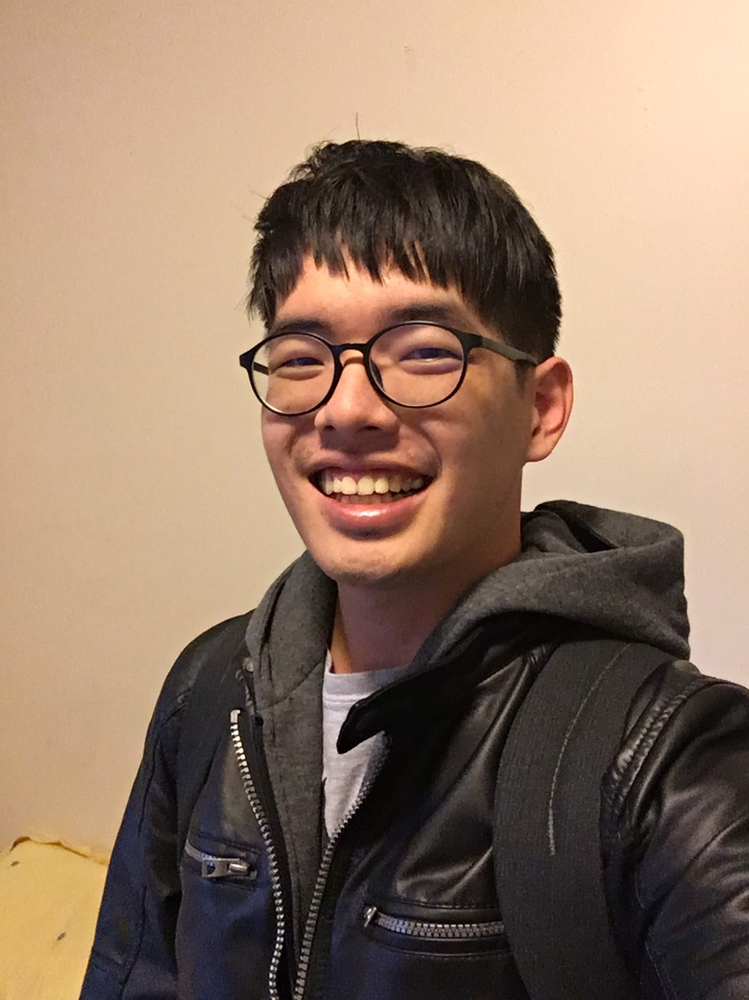

Honors and Awards
CMLH Translational Fellowship (2024)
Carnegie Institute of Technology Dean’s Fellow (2018)
Industrial Experience
Apple, Cupertino (Summer 2021)
- Manager: Amrinder Barn
- Customized SRAM cell design and evaluation in schematic-level
- Transmission Line Modeling
Industrial Technology Research Institute of Taiwan (ITRI), Hsinchu (Summer 2016)
- Software Engineer
- Information and communications research laboratories
- Installed Android 5.1 on Odroid-C2, a 64-bit quad-core SBC
- Ported Secure Virtual Mobile Platform (SVMP) on Android 5.1
Teaching Experience
TA of 18-623 Analog Integrated Circuit Design (Fall 2023)
- Lecturer: Marc Dandin
- Developed homework using gm/ID to aid circuit design
- Held office hour for average 8 hour per week
- Led recitation to guide circuit analysis and design review
- Built autograder on Gradescope to run and evaluate simulation automatically
TA of 18-661 Introduction to ML for Engineers (Spring 2022)
- Lecturer: Carlee Joe-Wong
- Developed homework for linear regression, neural network, EM, and graphical model
- Led a recitation to review EM, PCA/ICA, and GMM.
- Held office hour 2 hours per week
- Gave a presentation about hardware-friendly machine learning algorithms [Slides]
TA of Embedded System Lab (Spring 2017 + Spring 2018)
- Lecturer: Jing-Jia Liou
- Major TA among 7 TAs (Spring 2018)
- Designed material for on-device computer vision (OpenCV + Nitrogen6X)
- Designed material for bare metal microcontroller (NXP FRDM-K64F)
TA of Advanced Computer Architecture (Fall 2017)
- Lecturer: Yarsun Hsu
- Gave a lecture for superscalar architecture
- Developed a project using C to simulate Tomasulo algorithm
TA of Introduction of C Programming (Fall 2016)
- Lecturer: Mi-Chang Chang
- Course designed for freshman undergraduate
- Led a recitation for Linux basic and vim
- Held office hour 1 hour per week
Ching-Yi Lin
(林青億)
CMU ECE PhD

- [Dec'24] PhD defended!
- [Oct'24] Paper accepted by JBHI (Early Access)!
- [Jun'24] Presented in NEWCAS 2024. Thank you Quebec!
- [Apr'24] Paper accepted by NEWCAS 2024!
- [Jan'24] Become an ABD
- [Jan'24] CMLH Fellowship received
- [Nov'23] Patent published
- [Jun'23] Finish leave of absence
- [Jan'23] Prospectus exam passed
- [Dec'22] Leave of absence for Taiwanese military service